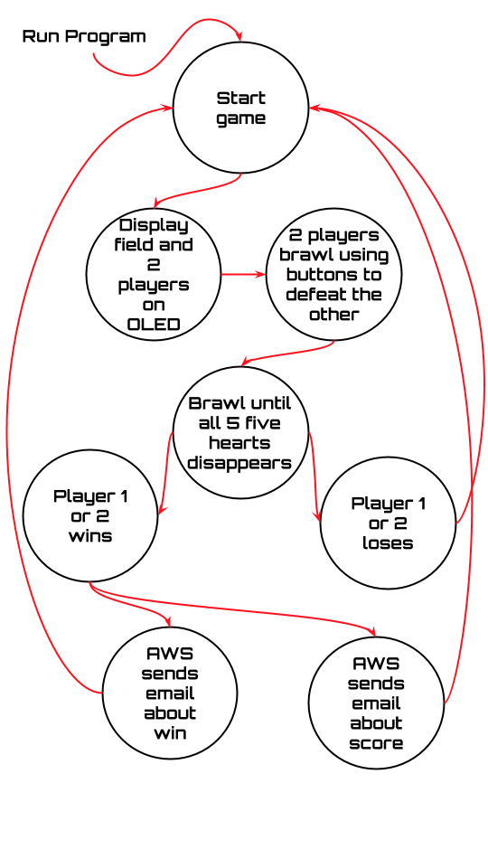
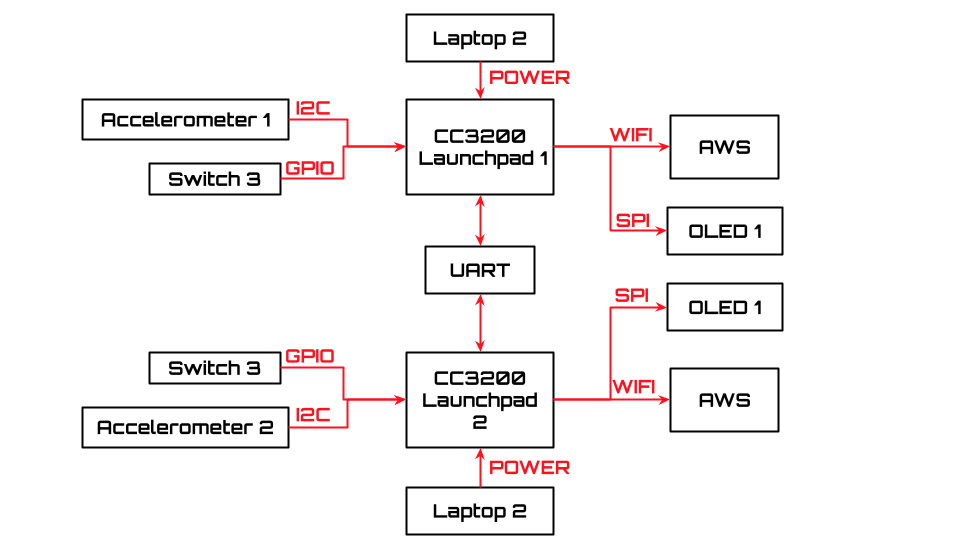
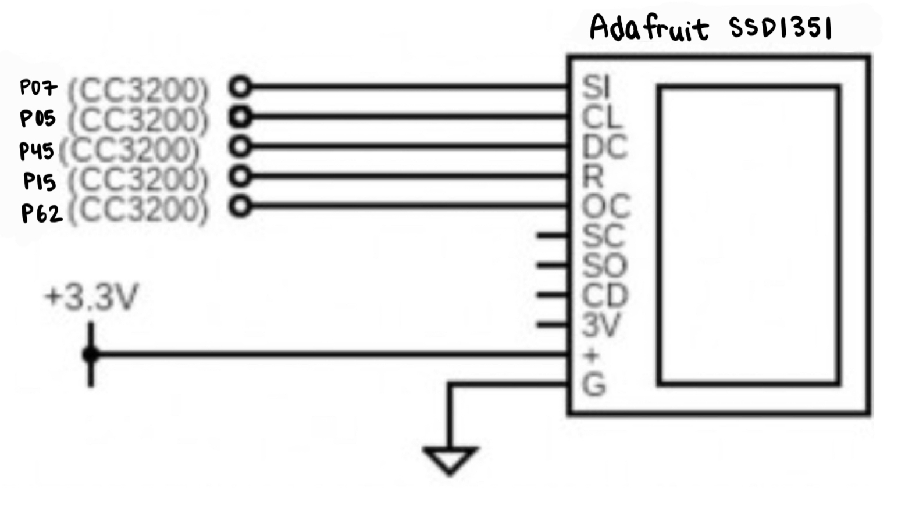
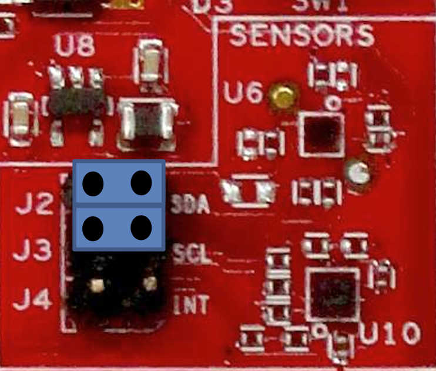
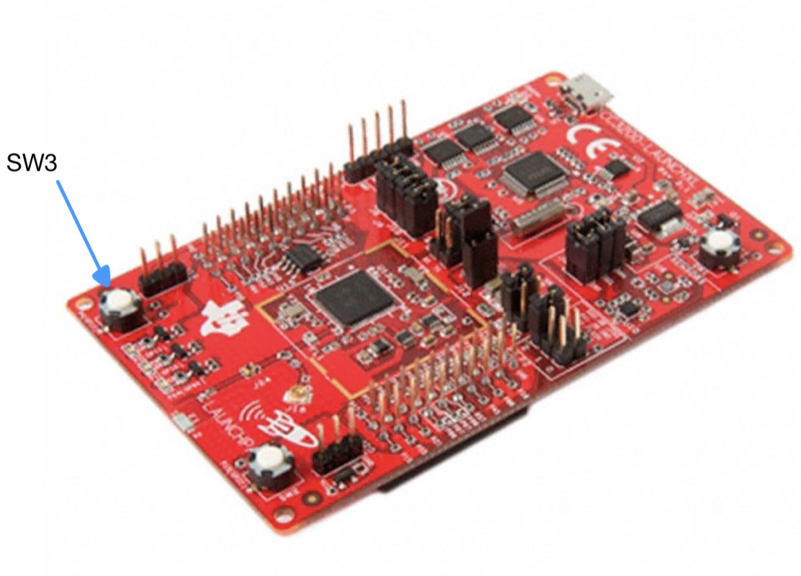
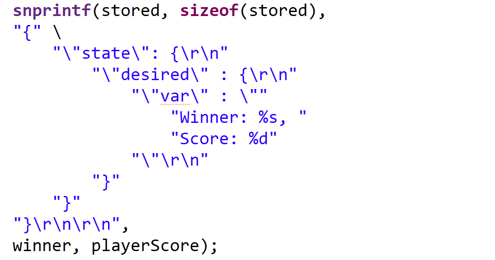

172 Brawl is a multiplayer combat game that involves controlling each character with a 3200 Launchpad built-in accelerometer.
Each player can shoot each other with the press of a button. Each player is allotted five hearts which tracks their life count.
Every time a player is attacked, the number of hearts for that player decrements. The objective for each player is to kill their opponent.
Once a player wins, an email is sent announcing who the winner is and the score for the winner.
This game is inspired by the popular mobile combat game, Brawl Stars.
In Brawl Stars, control is done fully on the device screen. Unlike Brawl Stars, in 172 Brawl there is a physical and real control aspect where players use an actual device for ease of movement.
Design
Functional Specification
For 172 Brawl, there are 8 states for this game to function. Our first state is the start of the game where,
once connected to power, our program loads. This allows us to continue to the next state. In this state is the playing field,
with the two players. From there the two players brawl with each other until one of their five hearts are gone.
What is shown on one OLED is replicated on the other OLED via UART. This allows the movements of one player to be shown on the other player's screen to be able to attack each other.
Player one or Player two can win by attacking the other player five times which is represented by the 5 hearts. The winner is sent an email through AWS about their win and their score.
The score is calculated based on how long the two players were brawling. The lower the score, the less time it took to defeat the opponent;
the higher the score the more time it took to defeat the opponent.

State Diagram
System Architecture
To start off, we need two of everything in order for the game to work. This includes laptops, CC3200 Launchpads, OLEDs, accelerometer, and switch 3. The only things we did not need duplicates for was UART, since that allowed communications between both CC3200 Launchpads, and AWS since it is connected to one 'Thing'. The laptops provide power for the CC3200 Launchpad and are also able to run 172 Brawl. From there, the game is displayed on both OLEDs via SPI through configured pins on the microcontroller. Both game displays are synchronized through the UART that is connected between both microcontrollers. This allows the coordinates of each player to be displayed and replicated on each OLED. The two players are controlled by the accelerometer which is connected to the microcontroller through the I2C pins. To determine the coordinates and the speed of the movement of each player, the acceleration of the x and y are multiplied by a rate and added to the current coordinates of the players. We also added a delay of 1 millisecond between each update of coordinates. In order for each character to attack each other, they had to be within 10 pixels from each other. Once the player you are controlling is in range of the opponent, this allows you to attack them by pressing Switch 3. Switch 3 is connected to the microcontroller via GPIO pins. Once a player loses their 5 hearts, which is displayed on the opponent's OLED, they officially lose. For the winner, they are sent an email through AWS about their win and score. Their score is reflected by how long it took the player to win. This is determined by a Systick Timer. The timer starts when the game starts and is stopped when the game is over, in other words, a player wins. The lower the score is, the less time it took to defeat the other player and the more time it took to defeat the other player, the higher the score is.

System Flowchart
Implementation
CC3200-LAUNCHXL Evaluation
Board
All control and logic was handled by two CC3200 microcontrollers. The board’s SPI functionality, using the TI SPI library, was used to connect with the
OLED display to showcase the game view. The built-in accelerometer interfaced with the board over I2C so that the rotation of the board can be taken for user control. The CC3200 also connects with the AWS device shadow via credentials and policies we define so that we can write the reported winner and the
score of the winning player to the device shadow before receiving an email.
OLED Display
We connect to the OLED Display with the SPI (Serial Peripheral Interface) bus, with the CC32000 Launchpad as the master device
and the OLED as the slave.

OLED Wiring Diagram
Accelerometer Control
For each person to control their player, we used the accelerometer that is built-in on the CC3200 Launchpad. To do this we referenced Lab2 to set up the players. The players are balls that move in the direction the CC3200 Launchpad is tilted. Overall, it has the same logic from Lab 2 to get our characters synchronized with the accelerometer. To do this, we multiplied a rate, in our case 0.5, with the x and y acceleration and added it to the coordinates (which we get by calling I2C_IF_Write(...)) of where the player currently is.
The accelerometer is at U10.
This resulted in smooth movement of our player moving across the playing field.

I2C Connections
GPIO Switch Button
To attack the opponent, a player must press SW3 of their CC3200. When the two players are within range of each other (which we defined in code as a 10 pixel radius),
the color of a player's character turns yellow on their console indicating that they can attack. The location of SW3 is shown.

SW3 on CC3200 Launchpad
AWS IoT Core
In order to connect to AWS, we recycled our AWS Console set up from Lab 4.
That set up involved creating a 'Thing' to represent our CC3200 boards in the cloud,
as well as the policies and certificates to properly interface with the physical boards.
In the code, we created a JSON format that we use to send to AWS as shown.

Device Shadow JSON
Challenges
The most significant challenge we faced while developing this
prototype was hardware issues that we encountered and had to troubleshoot. We also had to pivot our project multiple times based off what worked and what didn't.
UART Synchronization
We originally had issues syncing the displays of both OLEDs together in real-time. To overcome this, we sent coordinates x and y over UART using UARTCharPut(...)
and UARTCharGet(...). Each board essentially takes turns sending each other's coordinate information so that we can control two characters on the OLED simultaneously.
GPIO Switch Defect
On one of our CC3200 LaunchPad Boards, we did not realize that its SW3 was not working.
We found this out by running a gpio example from a previous lab on both the boards we had,
only to realize that the button registered as being on active-low for only one of the boards.
In order to fix this issue, we exchanged the defected board for a new one.
AWS IoT
Originally, we had issues connecting to AWS upon running our project,
but we realized that we had to disconnect our CC3200 Boards from our computer before re-running our program.
Another issue we had when connecting AWS was that we had to be in the lab room or next to the lab room in order to connect to AWS.
This issue occurred when we were working on the project outside of Kemper Hall and could not connect to AWS.
Future Work
To improve 172 Brawl, we would add a Begin Screen at the start of the game and a Game Over Screen for when a player is killed. In order to add this feature, we would use a TV remote and IR receiver that could be used for selection through different states of the game such as 'Start Game', 'Replay', or 'Pause'.
We would also add more features to AWS. We would display scores for both players in the email sent once a game is over. The email would also include what the Best Score is (the lowest score, since the lower the score, the faster it took to kill an opponent). To do that, we would connect AWS to an external database.